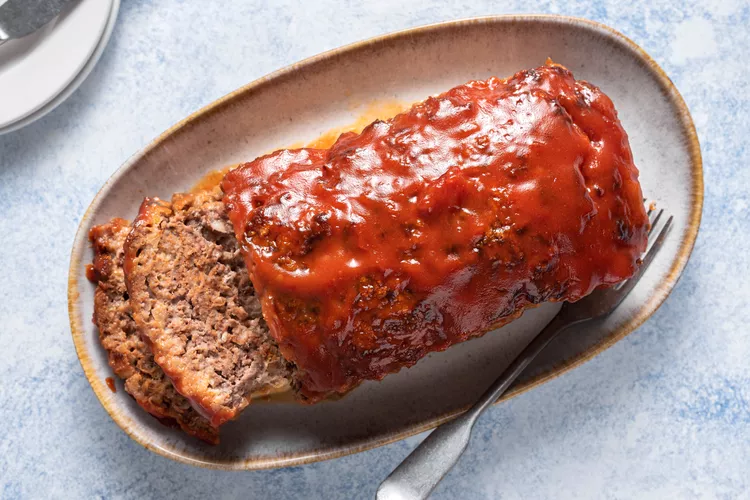

Meatloaf

Description
This easy meatloaf recipe is a family favorite and all 4 of my kids told me it’s one of their top childhood favorites! Serve with a side of mashed potatoes or mac and cheese for the perfect comforting meal.
Ingredients
- ½ medium onion diced
- 1 teaspoon butter
- 2 eggs
- ¾ cup milk
- ¾ cup Italian bread crumbs or seasoned breadcrumbs
- 2 pounds lean ground beef
- 1 tablespoon ketchup or chili sauce
- 1 teaspoon Italian seasoning
- 2 tablespoons chopped fresh parsley or 2 teaspoons dried parsley
- 1 teaspoon kosher salt more to taste
- ½ teaspoon black pepper
- ½ cup chili sauce
- ½ cup ketchup
- 2 tablespoons brown sugar optional
Steps
- Preheat the oven to 350°F. Line a rimmed baking pan with aluminum foil and spray with cooking spray.
- In a small pan, cook onions in butter over medium low heat until tender. Let them cool completely.
- In a medium bowl, combine eggs, milk, and breadcrumbs. Let the mixture sit for 5-10 minuteIn a medium bowl, combine eggs, milk, and breadcrumbs. Let the mixture sit for 5-10 minutes.
- Add the ground beef, cooked onions, 1 Tablespoon ketchup or chili sauce, Italian seasoning, parsley, and salt & pepper to the bowl. Mix until just combined.
- Form a 8"x4" loaf on the prepared baking pan and bake for 40 minutes.
- While the meatloaf is cooking, combine the chili sauce and ketchup (and brown sugar if using) to make Meatloaf Sauce. Spread mixture over the meatloaf and bake for an additional 15 – 30 minutes or until cooked through and the meatloaf reaches an internal temperature of 160°F*. Broil for 1-2 minutes if desired.
- Let the meatloaf rest for 10 minutes before slicing and serving.
Home